Sword
ดาบ
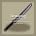
Thai Army Sword
คลิกเพื่อดูตัวอย่าง
Level : 1
พลังโจมตี[ทุบ-ฟัน-แทง-เวทมนต์] : 15-25-20-0
ความทนทานสูงสุด : 10
น้ำหนัก / ความจุ / น้ำหนักตอนสวมใส่ : 15.0 / 8.0 / 8.0
อาชีพที่สวมใส่ : All
แหล่งที่มา : Monster [Weapon Box -
Doom Doom
เพิ่มเติม : Critical +10
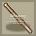
Bamboo Sword
คลิกเพื่อดูตัวอย่าง
Level : 1
พลังโจมตี[ทุบ-ฟัน-แทง-เวทมนต์] : 1-1-1-0
ความทนทานสูงสุด : 10
น้ำหนัก / ความจุ / น้ำหนักตอนสวมใส่ : 10.0 / 8.0 / 8.0
อาชีพที่สวมใส่ : All Job
แหล่งที่มา : Red Training Package[Cash]
ราคาซื้อ : 19,900 Cash

Blue Dragon Blade
คลิกเพื่อดูตัวอย่าง
Level : 1
พลังโจมตี[ทุบ-ฟัน-แทง-เวทมนต์] : 1-1-1-0
ความทนทานสูงสุด : 10
น้ำหนัก / ความจุ / น้ำหนักตอนสวมใส่ : 0.0 / 0.0 / 0.0
อาชีพที่สวมใส่ : All Job
แหล่งที่มา : Cash Shop[เมื่อในอดีต]
ราคาซื้อ : 9,900 Cash
เพิ่มเติม : Critical +10

Small Sword
คลิกเพื่อดูตัวอย่าง
Level : 11
พลังโจมตี[ทุบ-ฟัน-แทง-เวทมนต์] : 16-21-14-0
ความทนทานสูงสุด : 15
น้ำหนัก / ความจุ / น้ำหนักตอนสวมใส่ : 9.1 / 4.2 / 6.0
อาชีพที่สวมใส่ : Swordsman Class / Fencer Class
แหล่งที่มา :
Weapon Seller[Downtown]
ราคาซื้อ : 5,500 G

Long Sword
คลิกเพื่อดูตัวอย่าง
Level : 16
พลังโจมตี[ทุบ-ฟัน-แทง-เวทมนต์] : 20-25-17-0
ความทนทานสูงสุด : 15
น้ำหนัก / ความจุ / น้ำหนักตอนสวมใส่ : 10.5 / 5.6 / 8.0
อาชีพที่สวมใส่ : Swordsman Class / Fencer Class
แหล่งที่มา :
South Weapon Seller[Sourin Cape] /
Weapon Create LV 8 / Treasure 2 / Treasure 6
ราคาซื้อ : 12,300 G

Katar
คลิกเพื่อดูตัวอย่าง
Level : 21
พลังโจมตี[ทุบ-ฟัน-แทง-เวทมนต์] : 24-30-21-0
ความทนทานสูงสุด : 15
น้ำหนัก / ความจุ / น้ำหนักตอนสวมใส่ : 16.8 / 8.4 / 12.0
อาชีพที่สวมใส่ : Novice / Swordsman Class / Fencer Class
แหล่งที่มา :
South Weapon Seller[Sourin Cape]
ราคาซื้อ : 24,000 G

Katana
คลิกเพื่อดูตัวอย่าง
Level : 24
พลังโจมตี[ทุบ-ฟัน-แทง-เวทมนต์] : 25-37-24-0
ความทนทานสูงสุด : 20
น้ำหนัก / ความจุ / น้ำหนักตอนสวมใส่ : 10.5 / 7.0 / 10.0
อาชีพที่สวมใส่ : Swordsman Class
แหล่งที่มา :
South Weapon Seller[Sourin Cape]
ราคาซื้อ : 36,000 G
เพิ่มเติม : Critical Up
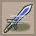
Broad Sword
คลิกเพื่อดูตัวอย่าง
Level : 30
พลังโจมตี[ทุบ-ฟัน-แทง-เวทมนต์] : 29-40-25-0
ความทนทานสูงสุด : 20
น้ำหนัก / ความจุ / น้ำหนักตอนสวมใส่ : 21.0 / 12.6 / 18.0
อาชีพที่สวมใส่ : Swordsman Class
แหล่งที่มา :
Yurika[Frozen Cave B3F] / Wood Box 6 / Treasure 5
ราคาซื้อ : 10,000 G
เพิ่มเติม : Critical Up
Mail Breaker
คลิกเพื่อดูตัวอย่าง
Level : 30
พลังโจมตี[ทุบ-ฟัน-แทง-เวทมนต์] : 26-34-26-0
ความทนทานสูงสุด : 25
น้ำหนัก / ความจุ / น้ำหนักตอนสวมใส่ : 25.2 / 8.4 / 12.0
อาชีพที่สวมใส่ : Swordsman Class
แหล่งที่มา :
Yurika[Frozen Cave B3F] / Wood Box 6
ราคาซื้อ : 40,000 G
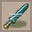
Forest Sword
คลิกเพื่อดูตัวอย่าง
Level : 35
พลังโจมตี[ทุบ-ฟัน-แทง-เวทมนต์] : 27-26-29-0
ความทนทานสูงสุด : 15
น้ำหนัก / ความจุ / น้ำหนักตอนสวมใส่ : 14.0 / 5.6 / 8.0
อาชีพที่สวมใส่ : Swordsman Class / Fencer Class
แหล่งที่มา : Wood box 1 / Wood box 2 / Wood box 3 / Wood box 4 / Wood box 5 / Treasure 1 / Treasure 2 /Treasure 3 / Treasure 4 / Treasure 5 / Treasure 7 / Treasure 10 / Treasure 12 / Container 4
เพิ่มเติม : Earth+10
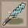
Accomplish Large Sword
คลิกเพื่อดูตัวอย่าง
Level : 35
พลังโจมตี[ทุบ-ฟัน-แทง-เวทมนต์] : 34-43-28-0
ความทนทานสูงสุด : 25
น้ำหนัก / ความจุ / น้ำหนักตอนสวมใส่ : 24.5 /14.0 / 20.0
อาชีพที่สวมใส่ : Swordsman Class
แหล่งที่มา :
Weapon Seller[Northern Promnard] / Treasure 7 / Treasure 10 / Treasure 12 / Container 4
ราคาซื้อ : 35,000 G
เพิ่มเติม : Critical Up
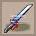
Tachi Sword
คลิกเพื่อดูตัวอย่าง
Level : 40
พลังโจมตี[ทุบ-ฟัน-แทง-เวทมนต์] : 36-45-28-0
ความทนทานสูงสุด : 30
น้ำหนัก / ความจุ / น้ำหนักตอนสวมใส่ : 21.0 / 10.5 / 15.0
อาชีพที่สวมใส่ : Swordsman Class
แหล่งที่มา :
Weapon Seller[South Iron City] / Wood Box 1 / Wood Box 2 / Wood Box 3 / Wood Box 4 / Wood Box 5 / Treasure 1 / Treasure 2 / Treasure 3 / Treasure 4 / Treasure 5 / Treasure 7 / Treasure 10 / Treasure 12 / Container 4
ราคาซื้อ : 78,000 G
เพิ่มเติม : Critical Up

Cerberus Fang
คลิกเพื่อดูตัวอย่าง
Level : 40
พลังโจมตี[ทุบ-ฟัน-แทง-เวทมนต์] : 29-39-30-0
ความทนทานสูงสุด : 25
น้ำหนัก / ความจุ / น้ำหนักตอนสวมใส่ : 23.8 / 9.1 / 13.0
อาชีพที่สวมใส่ : Swordsman Class / Fencer Class
แหล่งที่มา :
Weapon Seller[South Iron City] / Wood Box 1 / Wood Box 2 / Wood Box 3 / Wood Box 4 / Wood Box 5 / Treasure 1 / Treasure 2 / Treasure 3 / Treasure 4 / Treasure 5 / Treasure 7 / Treasure 10 / Treasure 12 / Container 4
ราคาซื้อ : 56,00 G
เพิ่มเติม : Fire+8 / Water+8
Franvel
คลิกเพื่อดูตัวอย่าง
Level : 45
พลังโจมตี[ทุบ-ฟัน-แทง-เวทมนต์] : 31-49-35-0
ความทนทานสูงสุด : 30
น้ำหนัก / ความจุ / น้ำหนักตอนสวมใส่ : 28.0 / 12.6 / 18.0
อาชีพที่สวมใส่ : Swordsman Class
แหล่งที่มา :
Weapon Seller[South Iron City] / Wood Box 7 / Treasure 8 / Treasure 9 / Treasure 11
ราคาซื้อ : 45,000 G
Strong Sword
คลิกเพื่อดูตัวอย่าง
Level : 45
พลังโจมตี[ทุบ-ฟัน-แทง-เวทมนต์] : 28-38-29-0
ความทนทานสูงสุด : 50
น้ำหนัก / ความจุ / น้ำหนักตอนสวมใส่ : 10.5 / 5.6 / 8.0
อาชีพที่สวมใส่ : Swordsman Class
แหล่งที่มา :
Quest รองเท้าประจำอาชีพ LV 45
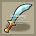
Cutlas
คลิกเพื่อดูตัวอย่าง
Level : 45
พลังโจมตี[ทุบ-ฟัน-แทง-เวทมนต์] : 31-42-31-0
ความทนทานสูงสุด : 20
น้ำหนัก / ความจุ / น้ำหนักตอนสวมใส่ : 16.8 / 8.4 / 12.0
อาชีพที่สวมใส่ : Swordsman Class / Fencer Class
แหล่งที่มา :
Weapon Seller[Tonka Island]
ราคาซื้อ : 57,000 G
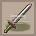
Sword of Emil
คลิกเพื่อดูตัวอย่าง
Level : 52
พลังโจมตี[ทุบ-ฟัน-แทง-เวทมนต์] : 33-46-34-0
ความทนทานสูงสุด : 30
น้ำหนัก / ความจุ / น้ำหนักตอนสวมใส่ : 10.5 / 10.5 / 15.0
อาชีพที่สวมใส่ : Swordsman Class / Fancer Class
แหล่งที่มา :
Weapon Seller[Fareast City] / Treasure 8 / Treasure 9 / Container 5
ราคาซื้อ : 59,000 G
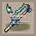
Stun Blade
คลิกเพื่อดูตัวอย่าง
Level : 60
พลังโจมตี[ทุบ-ฟัน-แทง-เวทมนต์] : 12-58-38-0
ความทนทานสูงสุด : 35
น้ำหนัก / ความจุ / น้ำหนักตอนสวมใส่ : 33.6 / 12.6 / 18.0
อาชีพที่สวมใส่ : Swordsman Class
แหล่งที่มา :
Quest Weapon LV 60 / Treasure 10 / Treasure 12 / Container 5
ราคาซื้อ : 66,500 G
เพิ่มเติม : Wind+8 / Critical Up

Treasure Sword
คลิกเพื่อดูตัวอย่าง
Level : 60
พลังโจมตี[ทุบ-ฟัน-แทง-เวทมนต์] : 35-52-36-0
ความทนทานสูงสุด : 35
น้ำหนัก / ความจุ / น้ำหนักตอนสวมใส่ : 22.4 / 8.4 / 12.0
อาชีพที่สวมใส่ : Swordsman Class / Fencer Class
แหล่งที่มา :
Quest Weapon LV 60 / Container 5
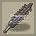
Chain Sword
คลิกเพื่อดูตัวอย่าง
Level : 70
พลังโจมตี[ทุบ-ฟัน-แทง-เวทมนต์] : 43-68-40-0
ความทนทานสูงสุด : 35
น้ำหนัก / ความจุ / น้ำหนักตอนสวมใส่ : 31.5 / 10.5 / 15.0
อาชีพที่สวมใส่ : Swordsman Class
แหล่งที่มา :
Machine Create LV 2
เพิ่มเติม : Critical Up

Blue Sword
คลิกเพื่อดูตัวอย่าง
Level : 70
พลังโจมตี[ทุบ-ฟัน-แทง-เวทมนต์] : 37-60-38-0
ความทนทานสูงสุด : 35
น้ำหนัก / ความจุ / น้ำหนักตอนสวมใส่ : 33.6 / 12.6 / 18.0
อาชีพที่สวมใส่ : Swordsman Class / Fencer Class
แหล่งที่มา :
Weapon Create LV 8

Uriaconorf
คลิกเพื่อดูตัวอย่าง
Level : 80
พลังโจมตี[ทุบ-ฟัน-แทง-เวทมนต์] : 48-84-65-0
ความทนทานสูงสุด : 35
น้ำหนัก / ความจุ / น้ำหนักตอนสวมใส่ : 21.0 / 12.6 / 18.0
อาชีพที่สวมใส่ : Swordsman Type
แหล่งที่มา :
Monster[Tobuggy] / Lump of Machine / Treasure 17 / Container 5
เพิ่มเติม : Critical Up
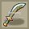
Whirlwind Sword
คลิกเพื่อดูตัวอย่าง
Level : 80
พลังโจมตี[ทุบ-ฟัน-แทง-เวทมนต์] : 40-73-41-0
ความทนทานสูงสุด : 35
น้ำหนัก / ความจุ / น้ำหนักตอนสวมใส่ : 11.2 / 8.4 / 12.0
อาชีพที่สวมใส่ : Swordsman Class / Fencer Class
แหล่งที่มา :
Weapon Create LV 10
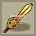
Phoenix Stinger
คลิกเพื่อดูตัวอย่าง
Level : 90
พลังโจมตี[ทุบ-ฟัน-แทง-เวทมนต์] : 43-82-44-0
ความทนทานสูงสุด : 35
น้ำหนัก / ความจุ / น้ำหนักตอนสวมใส่ : 12.0 / 10.0 / 10.0
อาชีพที่สวมใส่ : Swordsman Class / Fencer Class
แหล่งที่มา :
ขั้นตอนการทำ

Illumina
คลิกเพื่อดูตัวอย่าง
Level : 90
พลังโจมตี[ทุบ-ฟัน-แทง-เวทมนต์] : 46-93-61-0
ความทนทานสูงสุด : 35
น้ำหนัก / ความจุ / น้ำหนักตอนสวมใส่ : 50.0 / 18.0 / 18.0
อาชีพที่สวมใส่ : Swordsman Class
แหล่งที่มา :
Quest Weapon LV 90
เพิ่มเติม : Critical Up

Gariel Blade
คลิกเพื่อดูตัวอย่าง
Level : 90
พลังโจมตี[ทุบ-ฟัน-แทง-เวทมนต์] : 45-95-61-0
ความทนทานสูงสุด : 35
น้ำหนัก / ความจุ / น้ำหนักตอนสวมใส่ : 55.0 / 25.0 / 20.0
อาชีพที่สวมใส่ : Swordsman Class
แหล่งที่มา :
Weapon Create LV.10
เพิ่มเติม : Critical Up
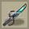
Husnomitama Sword
คลิกเพื่อดูตัวอย่าง
Level : 99
พลังโจมตี[ทุบ-ฟัน-แทง-เวทมนต์] : 43-82-44-0
ความทนทานสูงสุด : 35
น้ำหนัก / ความจุ / น้ำหนักตอนสวมใส่ : 12.0 / 10.0 / 10.0
อาชีพที่สวมใส่ : Swordsman Class / Fencer Class
แหล่งที่มา :
Quest Weapon LV 99
เพิ่มเติม : ??
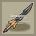
Black Wolf
คลิกเพื่อดูตัวอย่าง
Level : 99
พลังโจมตี[ทุบ-ฟัน-แทง-เวทมนต์] : 99-99-99-0
ความทนทานสูงสุด : 35
น้ำหนัก / ความจุ / น้ำหนักตอนสวมใส่ : 12.0 / 10.0 / 10.0
อาชีพที่สวมใส่ : Swordsman Class / Fencer Class
แหล่งที่มา :
Quest Weapon LV 99
เพิ่มเติม : Critical Up


![Machine Create LV 2[วิธีที่ 1]](http://i667.photobucket.com/albums/vv40/readingforyourdad3/ECOData/Weapon/Recipe/MasketRifle2.jpg){kind=link}
![Machine Create LV 3[วิธีที่ 2]](http://i667.photobucket.com/albums/vv40/readingforyourdad3/ECOData/Weapon/Recipe/MasketRifle.jpg){kind=link}


![คลิกเพื่อดูตัวอย่าง[Black]](http://i667.photobucket.com/albums/vv40/readingforyourdad3/ECOData/Weapon/Gun/Exam/AutomaticBlack.jpg){kind=link}
![คลิกเพื่อดูตัวอย่าง[Silver]](http://i667.photobucket.com/albums/vv40/readingforyourdad3/ECOData/Weapon/Gun/Exam/AutomaticSilver.jpg){kind=link}
![Machine Create LV 2[Black]](http://i667.photobucket.com/albums/vv40/readingforyourdad3/ECOData/Weapon/Recipe/AutomaticBlack.jpg){kind=link}
![Machine Create LV 2[Silver]](http://i667.photobucket.com/albums/vv40/readingforyourdad3/ECOData/Weapon/Recipe/AutomaticSilver.jpg){kind=link}
![คลิกเพื่อดูตัวอย่าง[Silver]](http://i667.photobucket.com/albums/vv40/readingforyourdad3/ECOData/Weapon/Gun/Exam/AutomaticDual-Silver.jpg){kind=link}
![คลิกเพื่อดูตัวอย่าง[Mix]](http://i667.photobucket.com/albums/vv40/readingforyourdad3/ECOData/Weapon/Gun/Exam/AutomaticDual-Mix.jpg){kind=link}
![คลิกเพื่อดูตัวอย่าง[Black]](http://i667.photobucket.com/albums/vv40/readingforyourdad3/ECOData/Weapon/Gun/Exam/AutomaticDual-Black.jpg){kind=link}
![Machine Create LV 3[Dual-Silver]](http://i667.photobucket.com/albums/vv40/readingforyourdad3/ECOData/Weapon/Recipe/AutomaticDualSilver.jpg){kind=link}
![Machine Create LV 3[Dual-Black]](http://i667.photobucket.com/albums/vv40/readingforyourdad3/ECOData/Weapon/Recipe/AutomaticDualBlack.jpg){kind=link}
![Machine Create LV 3[Dual-Mix]](http://i667.photobucket.com/albums/vv40/readingforyourdad3/ECOData/Weapon/Recipe/AutomaticDualMix.jpg){kind=link}


![Monster[Tobuggy]](http://www.kmitl.ac.th/~s1050421/ECOData/Monster/Human/Arkh.jpg){kind=link}